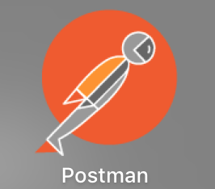
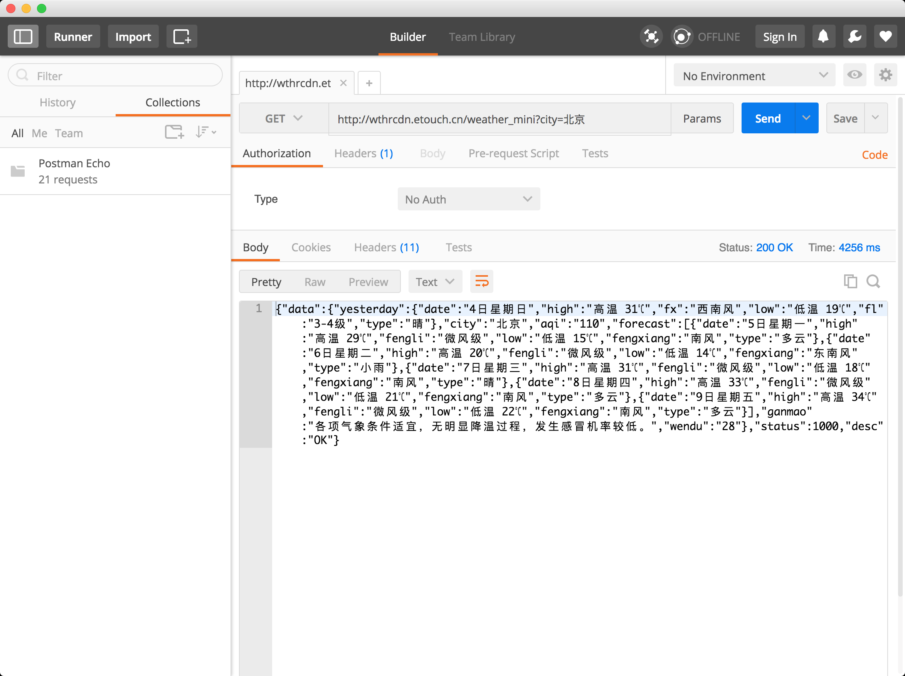
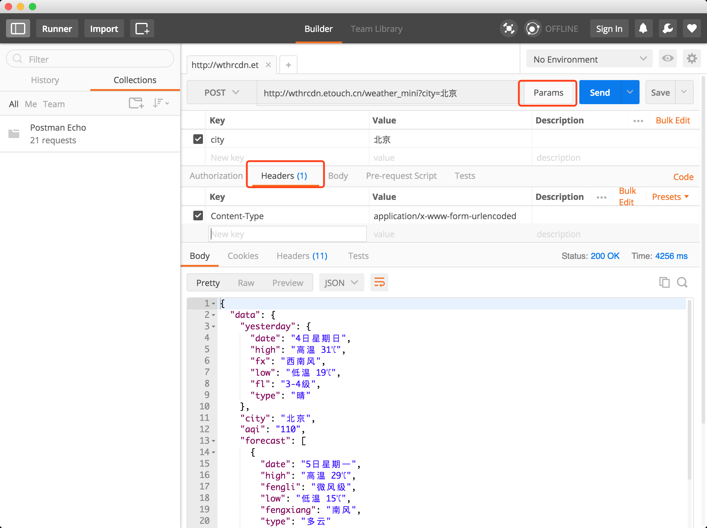
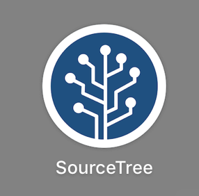
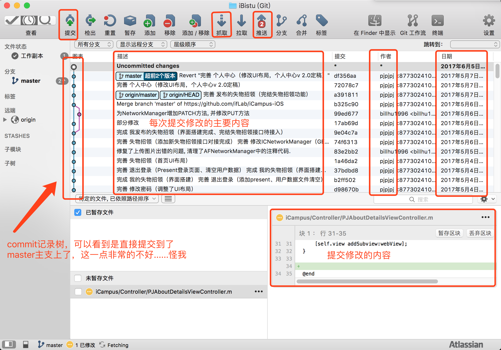
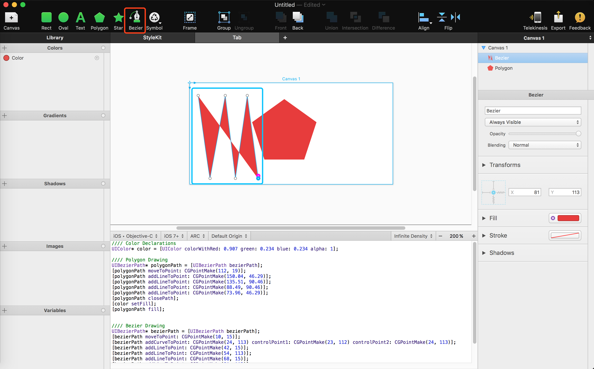
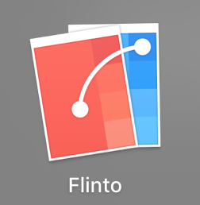
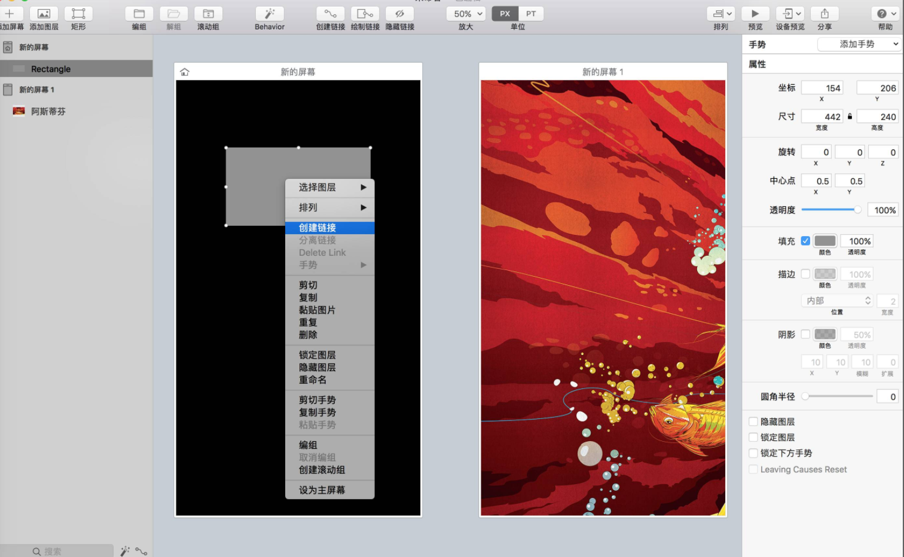
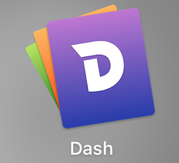

百家汇
在这一节内容中，笔者将向大家介绍一些在iOS开发中可能会用到的工具，并且还会提供部分工具的下载链接。这些工具都是在开发过程中遇到了部分瓶颈后发现的工具。笔者会在介绍部分工具的时候附带上一些使用教程。

Postman：Postman是一款功能强大的网页调试与发送网页HTTP请求的Chrome插件。当开发人员需要调试一个网页是否运行正常，并不是简简单单地调试网页的HTML、CSS、脚本等信息是否运行正常，更加重要的是网页能够正确是处理各种HTTP请求，毕竟网页的HTTP请求是网站与用户之间进行交互的非常重要的一种方式，在动态网站中，用户的大部分数据都需要通过HTTP请求来与服务器进行交互。Postman插件就充当着这种交互方式的“桥梁”，它可以利用Chrome插件的形式把各种模拟用户HTTP请求的数据发送到服务器，以便开发人员能够及时地作出正确的响应，或者是对产品发布之前的错误信息提前处理，进而保证产品上线之后的稳定性和安全性。
笔者目前安装在电脑上的Postman版本为4.11.0，好像已经落后一些了，不管没关系，我们用Postman的最重要的一点就是使用它提供的各种便捷HTTP调试功能（当然HTTPS也是可以的），那么我来看看Postman到底是怎么一回事吧，
Postman默认给你的请求设置为了GET，如果你有其它的请求需求，则在下拉框中选择相应的请求方式即可，

下面是用GET请求进行了一次北京当天的天气预报详情情况，

大家可以看到，这是一个text格式，也就是普通的文本格式，如果大家知道JSON格式的话，能够一眼看出这就是一个JSON格式的文本，我们需要对其做一个JSON格式的格式化， 从下拉框中，即可选择JSON格式的文本显示。
从下拉框中，即可选择JSON格式的文本显示。
如果你要选择POST请求方式，则需要进行HTTP请求的参数填写，那么我们应该怎么在Postman里边填写相关参数呢？不但可以填写POST请求参数，还可以填写HTTP头内容，如下图所示，

Postman还提供了非常多的功能供各种需求，Postman发布在Google的插件商店，需要大家翻墙下载，最重要的是，如此美好的东西是免费，免费，免费的！！！！


在上一节内容中，笔者向大家介绍了Git和GitHub的相关内容，大家都有了部分的了解，Git是一套版本控制工具，在这套工具中最直接的方式就是命令行操作，但是也就是这一点内容，阻挡住了非常多想使用Git进行版本控制的同学，笔者在此介绍两个两个工具，SourceTree和GitHub Desktop。
SourceTree和GitHubDesktop最大的区别就在于GitHub Desktop只能提供给托管在GitHub上的项目运行，而SourceTree提供给了任何一个使用了Git进行版本控制的项目。它们两个都以图形化界面的方式提供了一种展示和操作Git的交互。

上图为SourceTree的项目展示界面，其中最左边为本地Git的修改记录，左侧白色带向下箭头的为远端Git库中为在本地Git库中的修改记录。

上图为我校开源应用iBistu的commit记录展示，上图中红框的部分为整个sourceTree中比较重要的内容，大家看图就能够知道大概是什么个意思了。
Git的相关操作，都在SourceTree中得到体现，还算挺人性化的吧，大家有真正的需要Git进行版本控制的需求后自己摸索一番就全都明白是怎么一回事 了。。。
当修改了 git 密码，怎么在 SourceTree 中进行更新呢？
进入如下目录：~/Library/Application Support/SourceTree，删除掉对应 git 账户文件，下次执行 git push 即可弹出重新输入密码。

上图为GitHub Desktop的项目展示界面，其中位于顶部的偏黑色的那部分内容就是commit记录展示。因为笔者的用到Git进行版本控制的项目分为商业项目和个人项目，商业项目的话只是用到Git做版本控制，并不能开源（GitHub选择闭源则需要收费五美元，虽然数额不大，但是对学生来说还是一笔不小的开支），所以呢所有的商业项目中用到Git的地方都不是放在GitHub中，而是国内优秀的一些Git托管平台，比如码云，Coding等。个人项目的话，本着分享供大家学习参考以及提出修改意见的原则，全都放在了GitHub上。笔者用GitHub Desktop的地方不是太多，因为个人项目中用到的Git操作不是很复杂，所以笔者在此就不多说关于GitHub Desktop的操作了，这部分内容大家可以到网上自行搜索一番。
大家完全可以不需要使用SourceTree和GitHub Desktop进行Git操作管理使用Terminal也是可以的，只不过使用它们后会大大的减少在使用Git时的操作难度和时间，也更加利于管理。

“随着移动互联网的快速发展，越来越多的软件移居到了mobile device上，作为一名Coder或是Designer，必须学习新的移动平台开发技术才能跟上潮流，PaintCode是Apple Designer入门APP开发最合适的辅助工具之一，她可以把你绘制的矢量UI自动转化为适用于iOS/OS X的Objective-C代码，可以被视当年网页制作神器DW的今世转生版。” —— 摘自“百度百科”
打开程序后就看到了左上角最显眼的几块特定内容，在自带的这部分内容中，我们很容易的就能够通过拖动的方式“画”出代码，
把这部分代码复制到Xcode中对应的文件中即可。

在上图中红框部分还提供了部分语言选择、iOS版本以及是否使用ARC等（关于ARC是什么我们后边的章节中再说），

当然，最良心的地方它还提供了绘制贝塞尔曲线的工具，如下图所示，

PaintCode：下载链接

Flinto可能更加的偏向于产品经理或者UI/UX一些，不过对于开发者开说同样也是很有用的，比如APP的原型设计。在产品未正式开始编写之前，如果我们单单通过UI设计图来编写APP的话，其实很多时候并不能很好的把整套产品的理念给表现出来，经常会出现开发者花费了大把的时间按照UI设计图编写完了APP，但是最终APP呈现的效果并不好，比如页面的过渡与产品经理或者客户的设想不一致，很有可能会推翻很多之前花费大力气来写出来的效果，甚至还会给客户留下不好印象，所以Flinto可以有机的结合UI设计图，在产品未正式开始编写时，先通过Flinto和UI设计图搭建出APP原型，经过研究后提出修改的地方，最后才交由开发工程师编写。经过这么一套流程，能减少非常多的问题，大大减少了时间和人力成本。

在Flinto中有这么一个思想——“万般皆图层”，也就是说，我们日常使用的APP中的返回按钮、确定按钮等按钮在Flinto中都是图层，需要我们自己放上去，其实这一点并没有什么奇怪的地方，因为就算Flinto给你按钮选项，最终在开发APP的时候，你还是得真实的创建一个按钮，如果是这样的话，那干脆直接把UI设计图往上一放，然后给固定区域添加矩形，给这个矩形添加手势，再给这个矩形创建链接，并且还可以选择页面切换时的过渡动画。

创建一个新屏幕，给创建出来的新屏幕中添加图层，然后在原先屏幕中添加一个矩形。右键矩形，给这个矩形创建链接，

点击创建链接后，会出来一个可移动小突触，鼠标移动这个小突触，选择你要链接到的屏幕中，

在弹出的页面中，可选择点击矩形时的手势判断，以及新屏幕出现时的动画效果，以上步骤都做好后，点击右上角的预览即可看到制作完成后的效果
Flinto下载链接：http://www.sdifen.com/flinto22.html

Dash是一款文档查看工具，比如各类API文档等，在写代码的时候经常会遇到某个方法或者函数不知道是叫什么，运气好的话，一下就能够看到，如果运气不好的话，你想用的API别人都没用过，那就得去该门语言的官网去看，恰恰如此，很多语言的官网都在国外，你要是能够忍受每次查看相关API是都去对应慢的一批的官网当我没说。。。😂
Dash目前支持下图所示的主流平台及语言，当然你还可以手动导入你所需要的文档，比如各种电器的说明书啊等等，Dash的检索精度和速度都非常的快，当然，如果你选择了免费版的话，第一次打开应用程序进行检索时会等待10秒（不知道更新够还是不是这样），以后就会快一些了，笔者认为这点干扰还是可以忍受的。

笔者事先通过Dash下载了了苹果和Arduino的整套API文档，

可以看到，Dash解析出了文档中的所有标题，非常的详细，

检索NSString的相关方法，会看到Dash列出了所有跟NSString相关内容，而且还列出了所有的类方法和实例方法，右侧的详细类介绍排版非常的舒服。

Dash提供免费版和收费版，大家如果需要Dash的话，直接进入官网下载即可
随着WWDC 17结束，苹果发布了非常多新的API，同时很多厂商也会跟进推出一系列的开发工具供我们使用，本节内容随着时间的流逝，不间断持续更新！